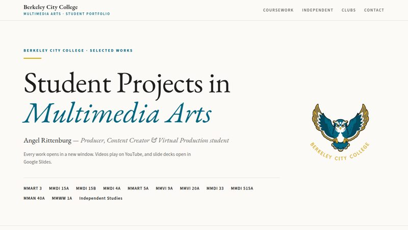
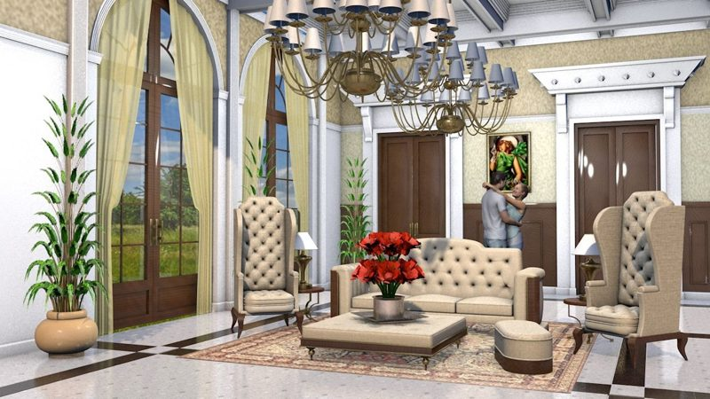
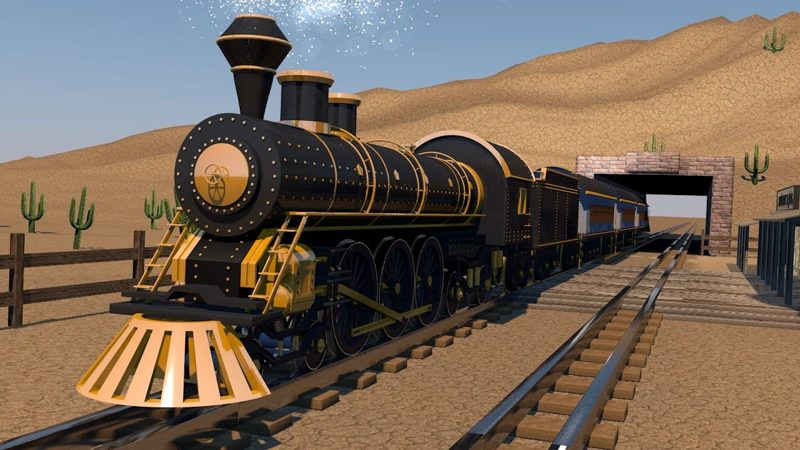
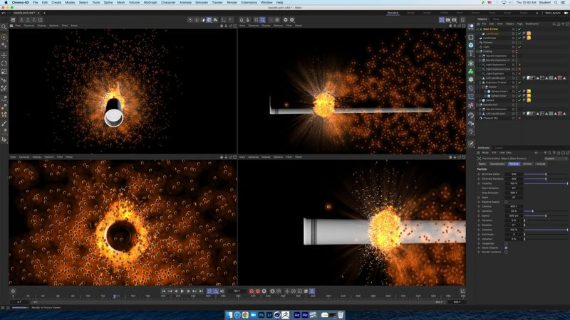
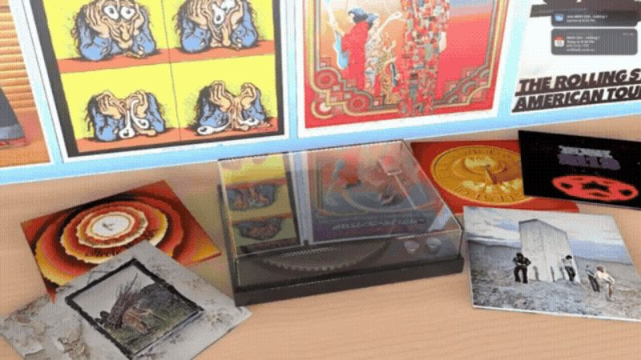

BCC Student Portfolio
- Every class as a numbered gallery with framed, matted thumbnails
- 3D modeling, Photoshop, motion graphics, video, typography, game design and web design
- Independent Cinema 4D studies and clubs
← Project list · 04
A catalogue of the interactive pages built from my class decks and project files, plus weekly lab and project updates.
Lab work, weekly updates and project updates: short check-ins that show work in progress, in date order.
1 entry · oldest firstFinished class projects rebuilt as museum-style pages: a swipe gallery, the assignment, references, and a downloadable PDF of the original deck. The portfolio comes first, then projects in the order they were made.
6 pages · oldest first


Upload pending


Upload pending